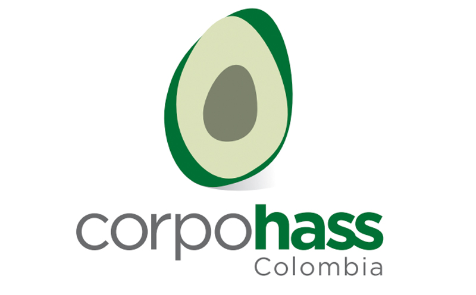
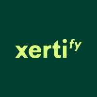
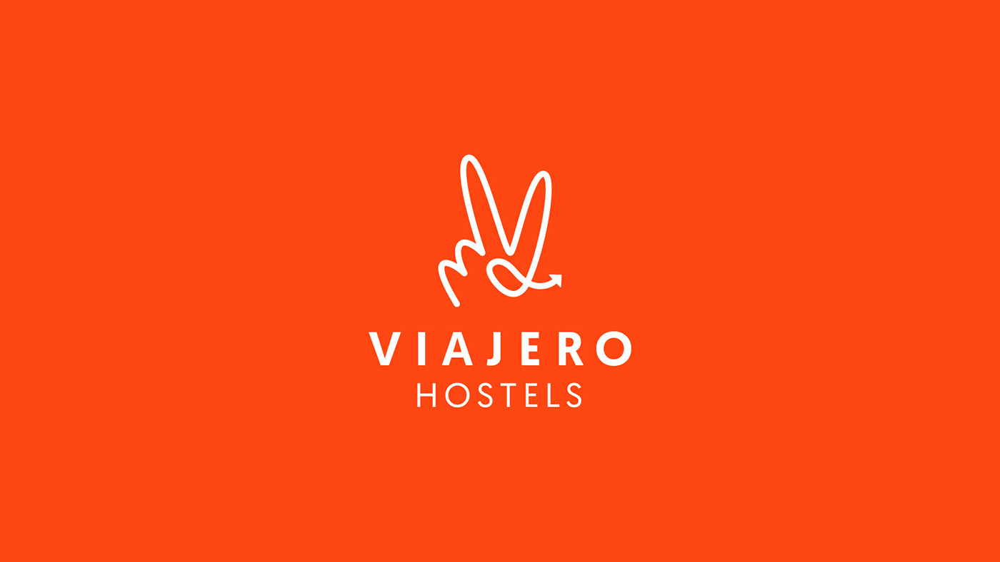
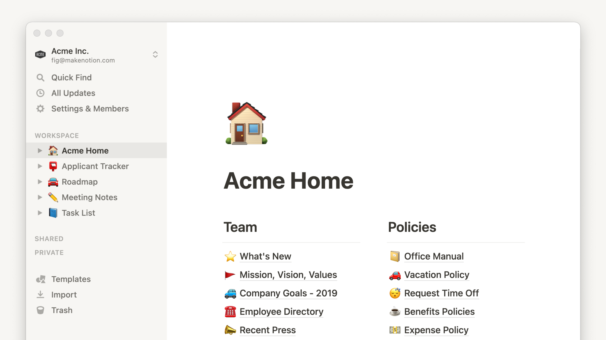
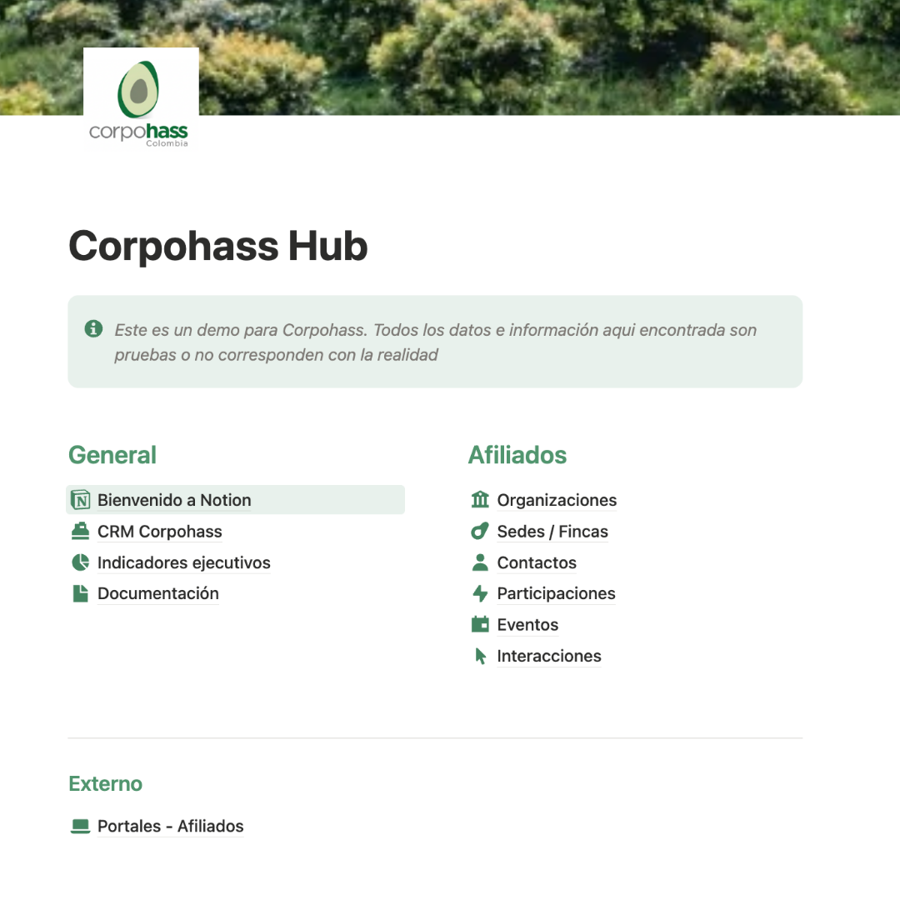

Plataforma CRM para Corpohass
construida sobre Notion

Presentado por The Workflow Company · 23 de junio 2026
AperturaEmpresa y equipo
Quiénes somos y por qué TWC.
Sección 1Quiénes somos
- The Workflow Company (TWC) ayuda a equipos y empresas de Latinoamérica a ser más eficientes, más autónomos y más productivos con los sistemas y herramientas correctas.
- Consultora boutique y Notion Consulting Partner certificado: no improvisamos sobre la herramienta, construimos soluciones reales que el equipo adopta.

XertifyQuién es el cliente
Empresa de tecnología educativa que está revolucionando las credenciales y certificados digitales.
Qué hicimos en Notion
Diseñamos e implementamos su CRM comercial sobre Notion: auditoría del CRM existente, estructuración de las bases de clientes y contactos, y creación de la base de Oportunidades (pipeline). Sumamos vistas, filtros y gráficos para gestionar el ciclo comercial y dar seguimiento a clientes.
Impacto
Pasaron de hojas de cálculo dispersas a un CRM real en Notion (no solo dashboards): pipeline visible, datos conectados entre clientes, contactos y oportunidades, y capacidad de tomar decisiones comerciales basadas en su propia data.


Viajero HostelsQuién es el cliente
Cadena de hostels con ~30 propiedades en 10 países de Latinoamérica (Colombia, Perú, México, Ecuador, etc.). Equipo distribuido, mayoritariamente operativo y con baja madurez digital.
Qué hicimos en Notion
Implementación de Notion Enterprise a nivel compañía (≈132 licencias): diagnóstico por áreas, diseño de un espacio de trabajo centralizado, sistema estandarizado de seguimiento de tareas y proyectos, dashboards de KPIs/OKRs (antes en Excel) y un plan de adopción por niveles de usuario (directores, líderes, operativos).
Impacto
Migración de información dispersa en Excel, WhatsApp y Teams hacia un único centro de trabajo; visibilidad en tiempo real del avance de tareas, menos reprocesos y dependencia de seguimiento manual, y una base estandarizada de procesos replicable entre las 30 locaciones.

Funcionalidades de la solución
El CRM en 4 módulos + demo en vivo.
Sección 2¿Por qué Notion?
- Todo en uno: CRM, bases de datos, proyectos, dashboards e IA en una sola plataforma — sin fragmentar la operación del gremio.
- Flexible y adaptable: se moldea a los procesos de Corpohass, no al revés; evoluciona con el negocio sin reimplementar desde cero.
- Versátil por diseño: bases relacionales, vistas, automatizaciones y portales conviven en el mismo espacio de trabajo.
- Encaje con Corpohass: centraliza el ciclo del afiliado, la operación interna y la relación con +300 afiliados en un solo sistema operativo.

“Una plataforma que crece con Corpohass: hoy CRM, mañana el sistema operativo del gremio.”
Sección 2 · 15 min🌱 Atraer y afiliar
- Captura de prospectos (web, eventos, referidos).
- Pipeline visual de afiliación por etapas.
- Flujo automatizado de prospecto → afiliado activo.
- Control de documentos.

“Un proceso de afiliación ordenado y sin que nada se pierda.”
Sección 2 · 15 min👤 Vista 360° del afiliado
- Ficha única: datos de la empresa, sedes/fincas y contactos.
- Historial de interacciones y eventos.
- Servicios y estado de cartera.

“Toda la relación con el afiliado en una sola pantalla.”
Sección 2 · 15 min📊 Atender y medir
- Gestión de servicios y tareas internas con ANS internos.
- Eventos: inscripción vs. asistencia.
- Encuestas de satisfacción.
- Dashboards e indicadores por área.

“Medir el servicio al afiliado y mejorar con datos.”
Sección 2 · 15 min🌐 Portal de afiliados + ecosistema
- Portal para +300 afiliados: consulta de estado, inscripción a eventos, actualización de datos.
- Integraciones del ecosistema: sistema contable (cartera), Mailchimp, SharePoint, Teams, Mapa Hass, plataforma de indicadores, listas restrictivas/compliance, WhatsApp/SMS.
- Motor de integraciones y automatización: Notion Workers + n8n / Make.

“El CRM no vive aislado: conversa con todo su ecosistema.”
Sección 2 · 15 minUna demostración en vivo: del prospecto a la decisión

Abrir demo en vivo →Captar y afiliar
Pipeline + automatización prospecto → afiliado activo.
Vista 360° del afiliado
Ficha consolidada con datos, sedes/fincas, historial, eventos, servicios y cartera.
Decidir con datos
Dashboards de dirección del propio CRM con indicadores del gremio en tiempo real.
Plan de implementación y metodología
Cómo lo construimos: 4 etapas y cronograma.
Sección 3Servicio, soporte y ANS
Esquema de servicio mensual, ANS y gobernanza.
Sección 4La herramienta correcta.
El equipo correcto.
La adopción garantizada.
Por eso TWC es el aliado para construir el sistema operativo del gremio Hass.
Construyamos juntos el CRM de Corpohass.
Cierre 21 / 22Inversión
Condición ESAL aplicada.
Slide de respaldo — mostrar solo si lo preguntan en vivo.
Respaldo 22 / 22